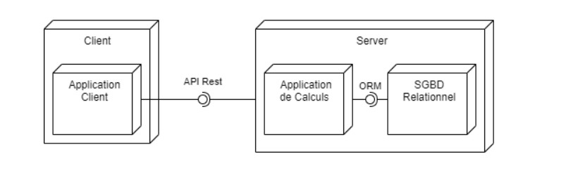
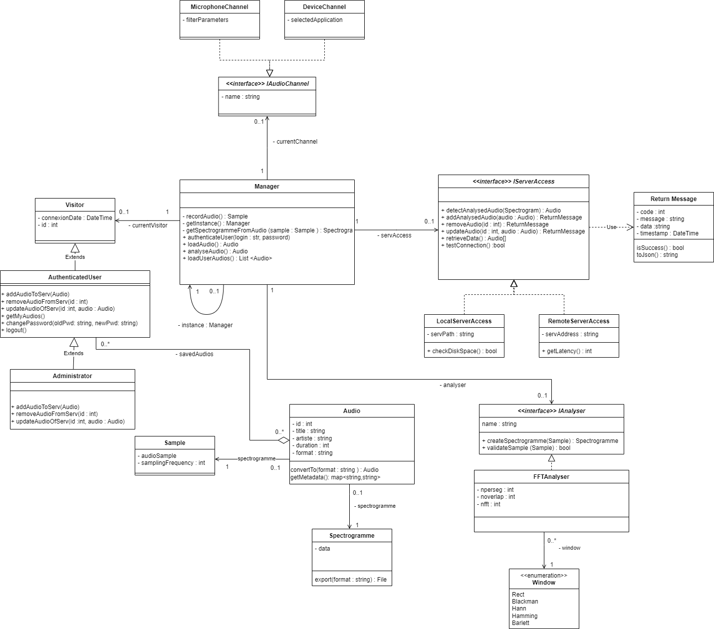
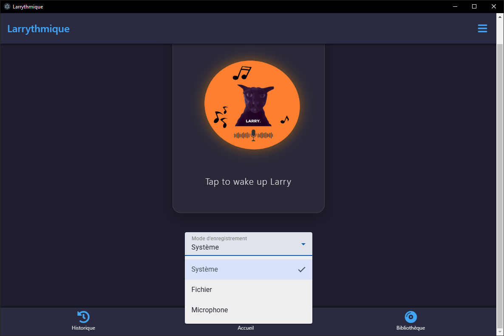
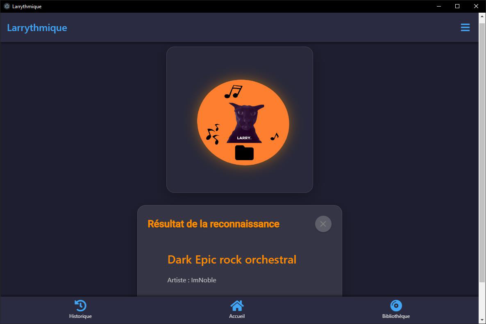
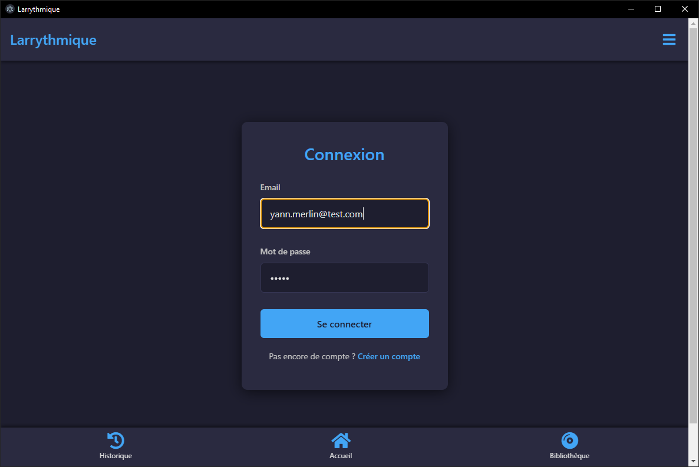
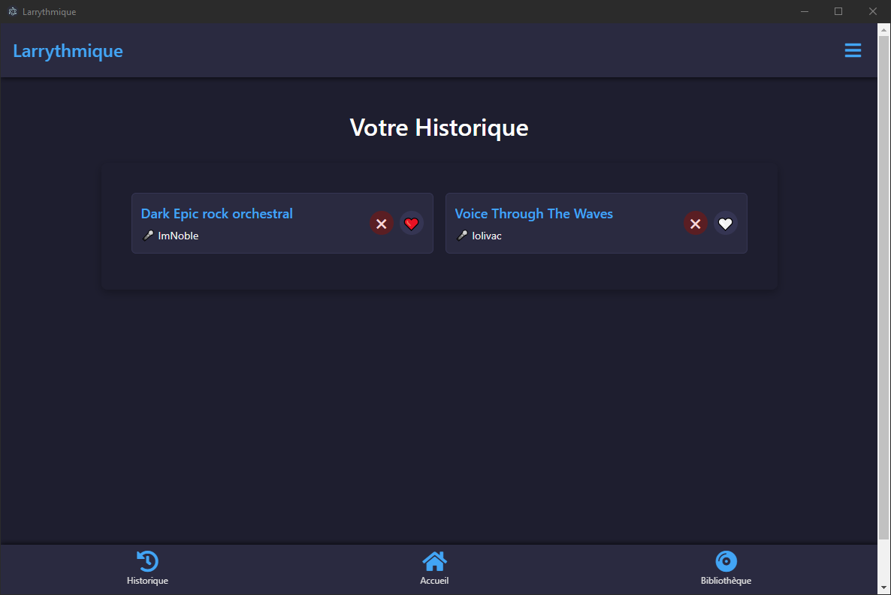
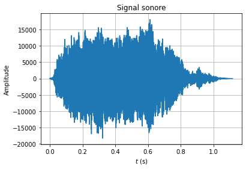
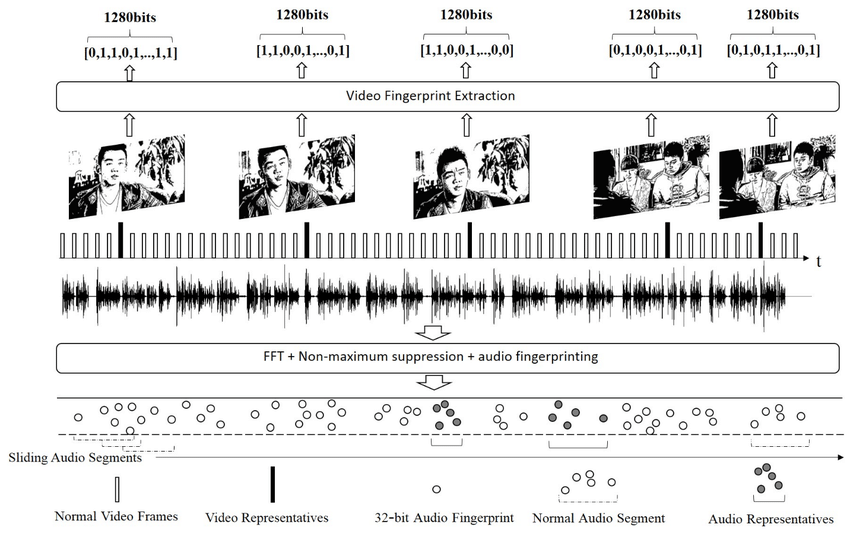
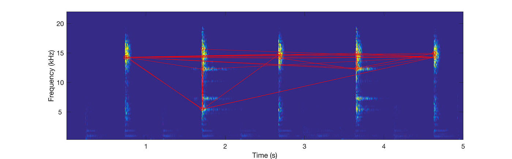

Laurian Jamin
FR
|
EN
Larrythmique : Le guide ultime de la reconnaissance musicale
ISIMA
SAÉ-FISA1
Laurian Jamin
Corentin Richard
Dorian Faure
Yann Merlin
Skills Acquired
Skill
Description
Concrete Example
Signal Processing
Full-Stack Development
Database Management
Agile Project Management
Modeling and Architecture
Overall Architecture Diagram

Client Class Diagram

Application Demo
User Experience


Advanced Features


Project Review
Technical Review and Deployment
Human and Professional Review
Challenges Faced and Solutions
Technical: System Audio Stream Capture (Yann)
Difficulté :
Solution :
Methodological: Task Assessment and Planning (Corentin)
Difficulté :
Solution :
Technical & Collaborative: Recognition and Versioning (Laurian & Dorian)
Difficultés :
Solution :
Mathematics of Music Recognition
1. Fourier Transform
\[ X(f) = \int_{-\infty}^{\infty} x(t) e^{-i 2 \pi f t} \, dt \]

2. Fingerprint Generation

3. Search and Matching

Bibliography
An Industrial-Strength Audio Search Algorithm
Music Processing, Fingerprinting, and Recognition
AcoustID Project
Télécharger le code source